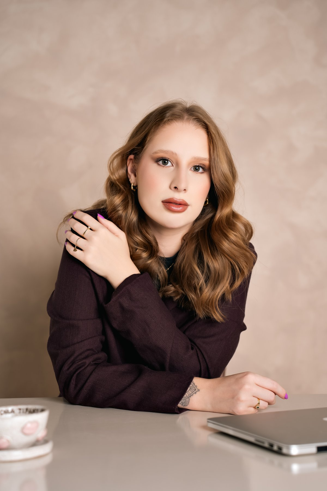
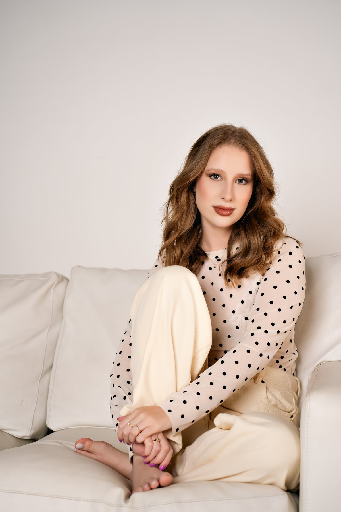

Biomedicina estética · Balneário Camboriú
Cada rosto pede um
protocolo diferente.
Avaliação individual e tratamentos faciais. Protocolo montado para o seu rosto.
Agendar avaliaçãoAtendimento com hora marcada
Rostos quepassaram por aqui
Divulgação autorizada pelas usuárias. Esta imagem não representa, em hipótese alguma, garantia de resultado. Cada ser humano tem características anatômicas e fisiológicas únicas.
O QUEeu faço
Harmonizaçãofacial
{{ it.detail }}
Tratamentosde pele
{{ it.detail }}
Comofunciona
{{ s.title }}
{{ s.desc }}
Quem estádo outro lado
Eu sempre fui a menina que gostava de se cuidar. Muito antes de saber que existia profissão pra isso, eu já passava horas testando creme, olhando a pele no espelho, tentando entender o que mudava e por quê.
Virei biomédica esteta porque quis entender o que acontece embaixo da pele, não só o que aparece em cima dela. É isso que eu levo pra cada atendimento. Gosto de explicar, gosto que você entenda o que estou fazendo, e não indico nada que eu não indicaria pra mim.
Nas palavrasde quem já passou por aqui
Depoimentos reais de pacientes, publicados com autorização.
Perguntasfrequentes
{{ f.a }}

O resultado é construído,
não comprado.